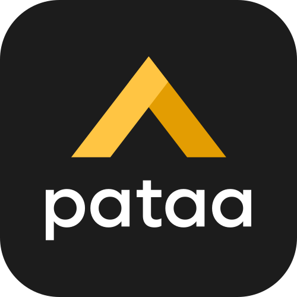
Product design · Case study · 2022 redesign
The call, on almost every orderI am near your area. Where exactly are you?
Pataa gives any spot in India a short code you can trust, one three by three metre block instead of a whole neighbourhood, and directions you can actually hear. A trustable address for the last mile.
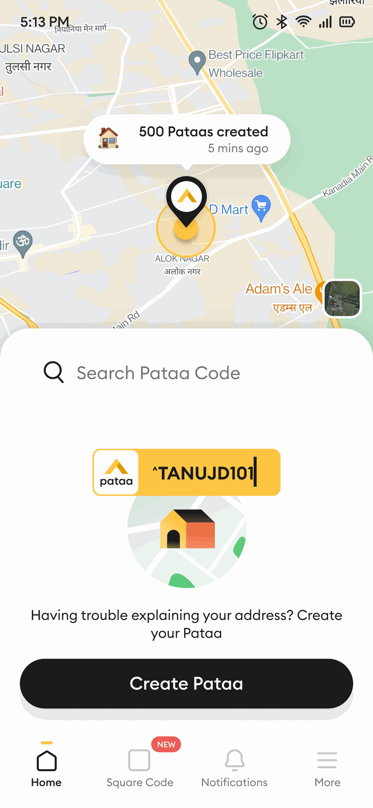
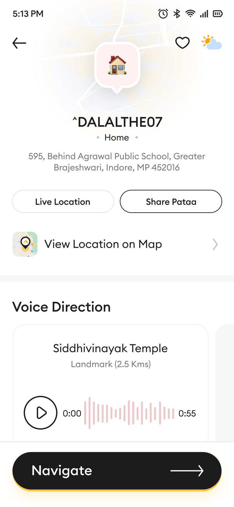
Real screens from the live app, on Android and iOS. Shown whole, nothing cropped.
A trustable address for the last mile.
Pataa is the Hindi word for address.
At a glance · the thirty-second version
A written address gets a rider to your area. Pataa gets them to your door, without the phone call. It does that three ways.
01 The premise
You have felt the other end of this. The app says the rider has arrived, then the phone rings, and a stranger holding your dinner asks where exactly you are. He is somewhere on your street, reading an address that never really told him where to stop.
College Tilla, Agartala is a real, complete address. Spelled right, understood by everyone local. To a stranger with a phone it still points at a whole hillside of lanes, not a doorway. The address is where the search starts. It was never the place itself.
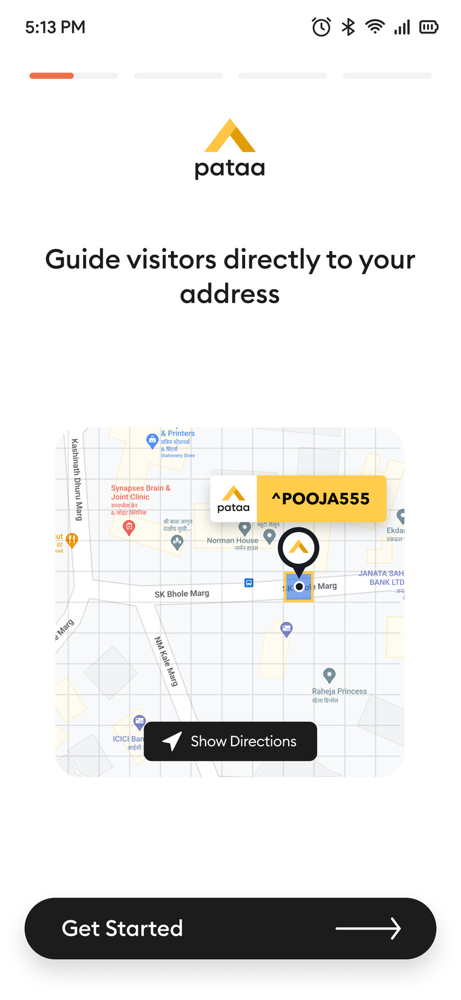
02 Two people, one broken moment
The one waiting
They typed their full address at checkout. It was not enough. Now they are on the phone, describing a temple and a turn.
The one arriving
Every vague address costs minutes. Every call is another stop. The map ends where the hard part begins.
of India's last-mile delivery cost goes into bridging the gap between the written address and the actual door. Roughly a third, against about a tenth where an address already resolves to a point.
Industry context, from MIT Emerging World and Delhivery. The addressing gap is estimated to cost the economy somewhere between ten and fourteen billion dollars a year. These figures describe the market Pataa works in. They are not outcomes from this project.
03 The senior move
Delivery agents, logistics coordinators, and a few people who simply travel a lot and get lost the way everyone does. The obvious fix was sitting right there: make the address shorter. Give every place a tighter code, something like a PIN, only smaller.
The interviews took that apart. A shorter code still drops you at the start of the last twenty metres with no idea which gate is yours. And the people who navigate for a living do not think in coordinates. They think in the temple they pass, the blue shutter, the mall they turn before. A precise number is simply not how one person gives directions to another.
The brief we were handed
Make the address shorter.
The brief the research wrote
Make an address people can trust at a glance, and act on without a phone call.
04 Who we designed for
An address is created by one person and arrived at by another. A second thing, how easily each one moves through a phone, decides what the design has to carry.
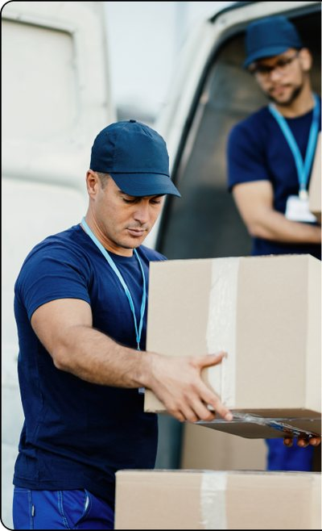
Rajesh, 28
Delivery rider · Delhi · the finder
Runs forty-plus drops a shift, paid per delivery, one hand on the bike. Needs the exact door in one look, a landmark he knows, a route he can start without calling.
Anjali, 31
Marketing manager · Bangalore · the sender
Orders often, hosts, sends gifts, lives inside maps and chat. Needs one precise thing to share that a stranger can act on without her narrating the way.
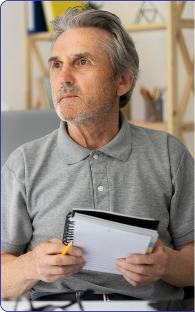
Mohan, 65
Retired teacher · Agartala · both sides
First smartphone, reads slowly, prefers his own language, weak signal at home. Needs to hear the way in Hindi, big obvious buttons, something that works offline.
Mohan is the one who moved the product. Build something Rajesh can fly through and you get a faster app. Build something Mohan can use at all and you are pushed into voice, more than one language, and buttons large enough to hit without aiming. Each choice, made for the person with the least, quietly made the app better for the two with more.
Persona portraits are representative images. The three are archetypes drawn from the interviews, not real individuals.
05 How we worked
We sorted everything a first version might do into priority tiers, so the team argued about the ladder once instead of about every screen. The non-negotiable came first: land the person on the exact endpoint. Everything clever waited behind that.
Then we drew. Crazy Eights, eight ideas in eight minutes, including one round where the whole point was to draw the worst solutions we could think of, on purpose. A table covered in bad ideas is the fastest cure for clinging to your first safe one. We went to mid-fidelity screens in Figma and put them in front of people twice, with six chosen to stand in for Rajesh, Anjali and Mohan.
The route preview felt a bit cluttered; it was hard to tell the alternate routes apart.
A participant in testing. We had over-drawn the preview, so we pulled it back.06 The solution
It reads like a handle you would pick for yourself. Seven to eleven characters. Underneath the friendly name it is a precise geocode: one specific three by three metre block out of the roughly fifty-seven trillion that tile the planet. You hand someone the name. The app resolves the block.
Making one is staged on purpose, so it never asks for everything at once.
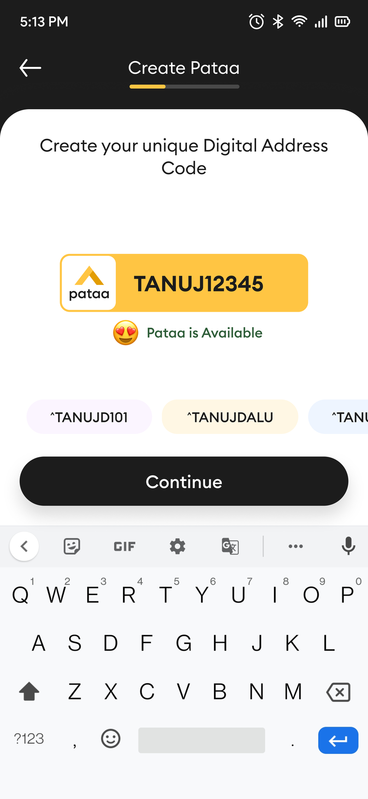
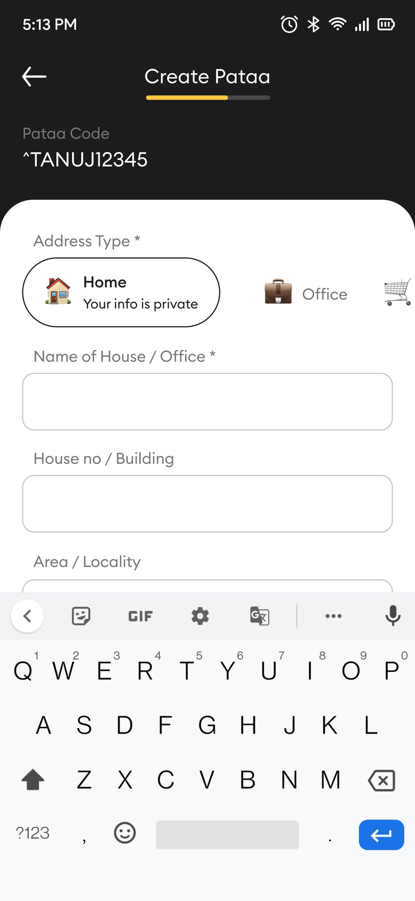
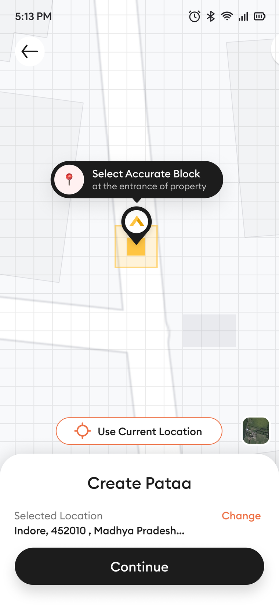
Three real screens from the create flow. The add-details step is a genuine app screenshot, not a mock-up.
07 The part I cared about most
A code puts you on the right block. It does not tell you the entrance is behind the sweet shop, up the side stairs, past the blue gate. People have always closed that last gap with a sentence. Pataa lets you record the sentence once and pin it to the code.
You hold the mic and just say it: go straight from the mall, the blue gate is on your right. It saves as a clean waveform you can play back, in English or in Hindi. If you would rather type than talk, you type, and the app reads it aloud to whoever is on the way.
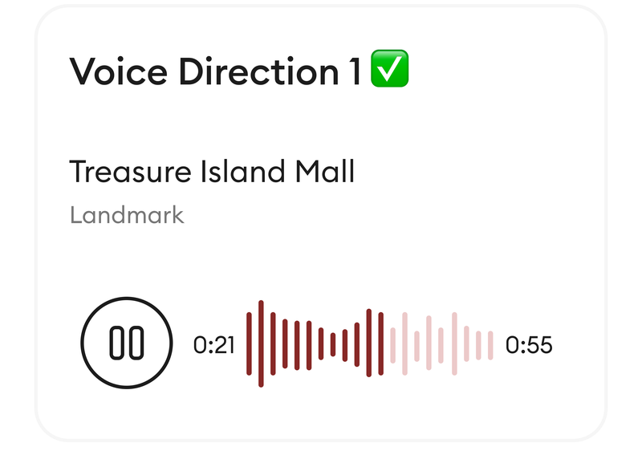
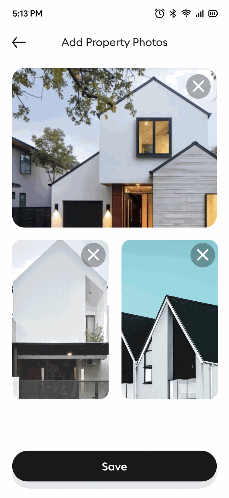
A voice-guided navigation option would make this app a game-changer for drivers.
A driver, in a moderated session. He said out loud the thing we were already leaning toward.The call-me-when-you-are-close conversation does not get shorter. It stops happening.
08 Honesty as a design material
Pataa can share your live location with someone for a set stretch of time. That is genuinely useful, and a little dangerous, so the design refuses to be quiet about it.
While it is on, it is loud. A maroon card sits on the home screen and says exactly what is true: live location active, sharing now, with this person, for this long. A timer counts down in front of you, and the tap that turns it off is right there, not buried three menus deep.
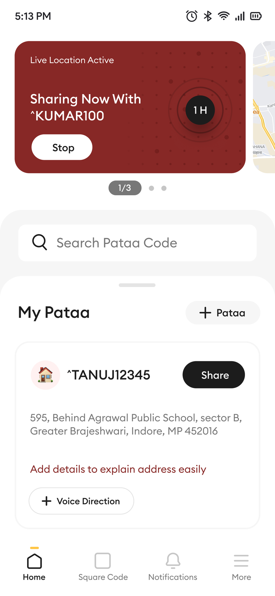
Sharing where you are is not something a design should ever be quiet or dishonest about.
Neel TengariyaPataa is where I started treating honesty as a material you build with, the same as colour or type or space. It is the idea most of my work is organised around now.
09 System and outcome
The same standard runs through the rest of the app. A code you scan instead of type, so even a spot with no signboard gets one. A drone-delivery pilot waiting at the far edge, for the day the block matters to a machine and not only a rider.
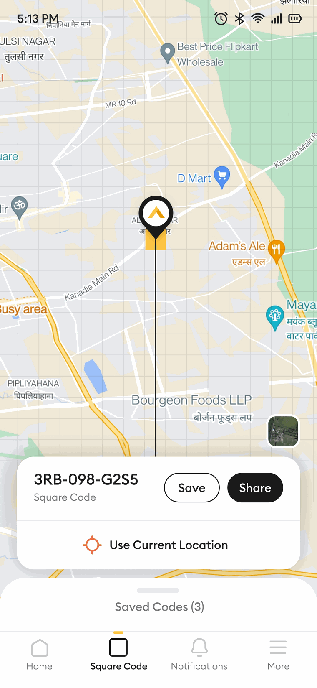
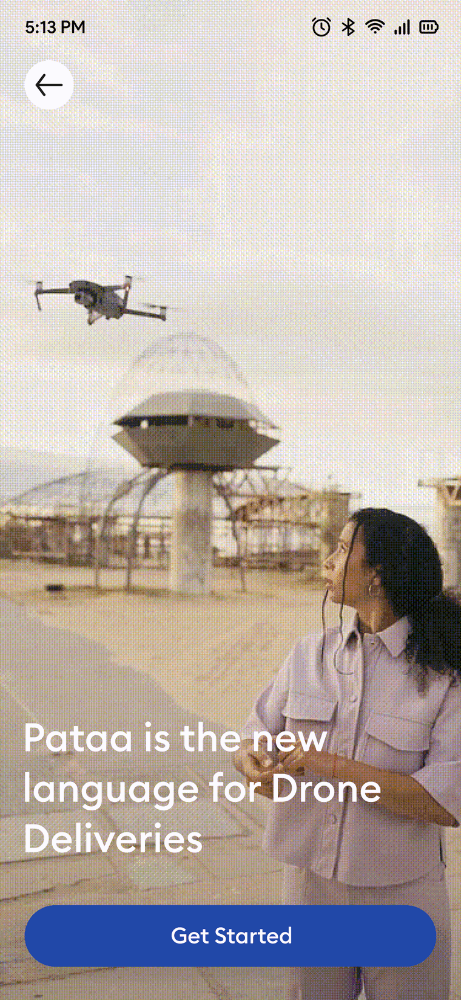
downloads Pataa has reached across Android and iOS. This is the scale of the product I helped redesign. It is not a number this project claims to have driven. The app was already past three million downloads by August 2021, before I joined.
Everything you might once have seen attached to this project, the tidy satisfaction scores and the round outcome numbers, was never real. The honest story is the process and that one figure.
10 What it taught me
Make it shorter would have shipped, and it would have shipped something worse. The only reason we could tell the difference is that we had gone and asked. Research was not a box we cleared before the real work. It was the thing that told us what the real work was.
The hard part of Pataa was never the map or the waveform. It was the first thirty seconds, teaching a person that their address could be a code they choose. Teaching a genuinely new idea is the real design problem, and it deserved our attention sooner than it got it.
The live-location state taught me that a screen owes you the truth about what it is doing. That belief did not stay in this project. It sits at the centre of how I work now.
the night ends where the door begins
Case study by Neel Tengariya, written in a team voice because it was a team effort. The two quotes are real feedback from user testing. The industry figures are cited context, not outcomes I produced. Every app screen and component on this page is a real Pataa export, shown whole; the persona portraits are representative images. Type is Fraunces and Hanken Grotesk; the one accent is Pataa amber, with maroon kept only for the states that are genuinely red in the app.
← All six tellings